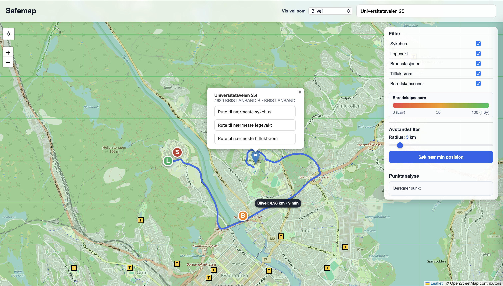

Geodata
SafeMap
Et GIS-prosjekt som kartlegger Norges totalberedskap – sårbarheter og tilgjengelighet til kritisk infrastruktur for befolkningen, utviklet i samarbeid med Kartverket og Norkart som en del av IS-218 Geografiske informasjonssystemer ved UiA.
Se på GitHub ↗